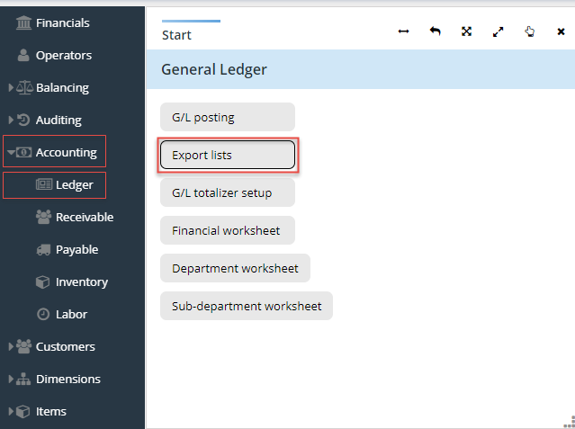
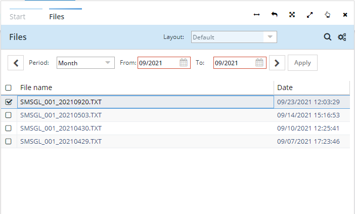
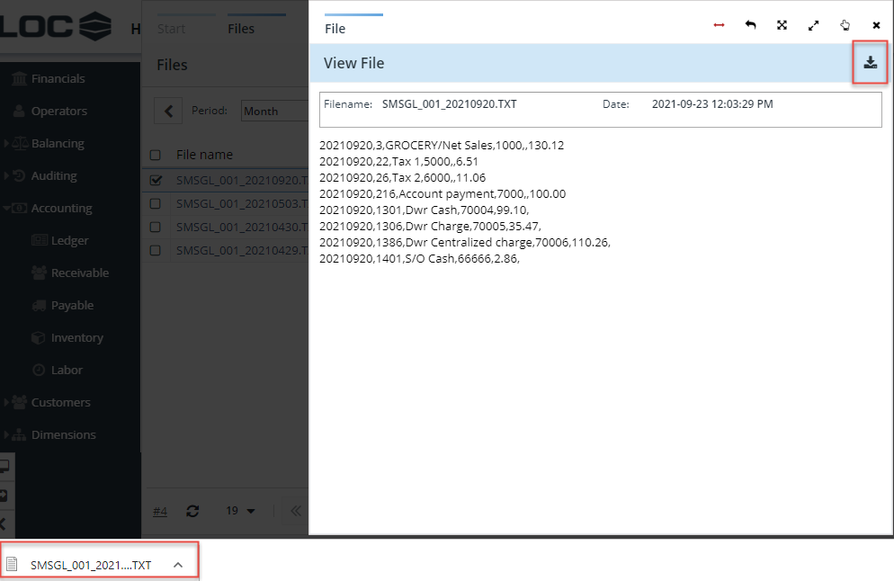

eSuite Manage > Accounting > Ledger
Information
The Ledger entry in eSuite Manage module allows you to program the general ledger, post and generate the generic accounting export for G/L (General Ledger) in order to impact the balance sheet's assets and liabilities.
Steps
Once you have posted the general ledger, you can manually download a generic accounting export file.
- In the launcher, click the arrow on Accounting entry to display its menu
- Click on Ledger
- Select Export list

- Enter date of the G/L export file you would like to download
- Select Apply.
-

- Double click on the file you need to download
- View the file, and select the download button. The file will download and can be opened or saved.
